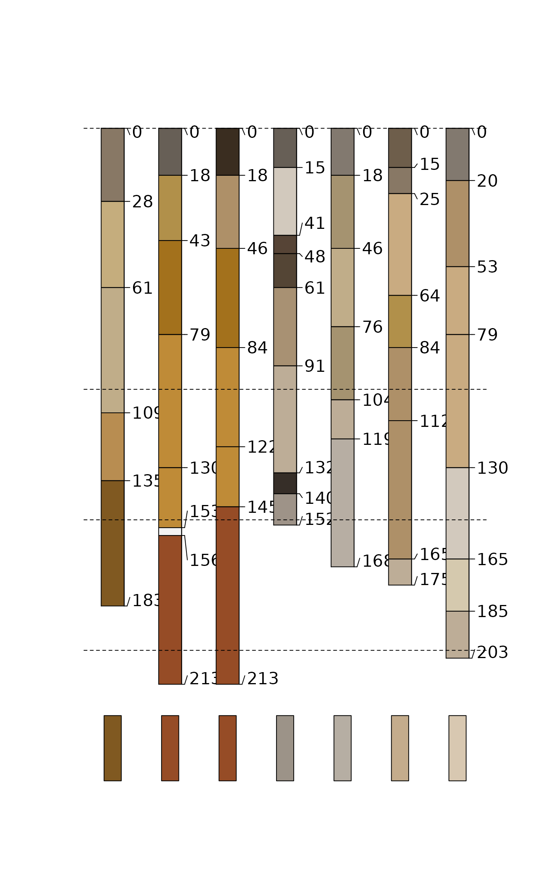

Calculate "melanization" component of "Profile Development Index" after Harden (1982) "A quantitative index of soil development from field descriptions: Examples from a chronosequence in central California". Accepts vectorized inputs for value and reference value to produce vector output. A convenient use case would be to apply this on a profile-specific basis, where the value_ref has a single value, and value is a vector of length equal to the number of horizons within the upper 100 cm.
Details
In Harden (1982), "melanization" is calculated relative to a reference parent material for all horizons within 100cm of the soil surface. In addition, several other non-color components are normalized relative to a maximum value and summed to obtain the overall Profile Development Index.
References
Harden, J.W. (1982) A quantitative index of soil development from field descriptions: Examples from a chronosequence in central California. Geoderma. 28(1) 1-28. doi: 10.1016/0016-7061(82)90037-4
Examples
# keep examples from using more than 2 cores
data.table::setDTthreads(Sys.getenv("OMP_THREAD_LIMIT", unset = 2))
library(aqp)
data("jacobs2000", package="aqp")
# LEFT JOIN hue, value, chroma matrix color columns
horizons(jacobs2000) <- cbind(horizons(jacobs2000)[,c(idname(jacobs2000), hzidname(jacobs2000))],
parseMunsell(jacobs2000$matrix_color_munsell, convertColors = FALSE))
# calculate a mixed 150-200cm color ~"parent material"
jacobs2000$c_horizon_color <- profileApply(jacobs2000, function(p) {
# and derive the parent material from the 150-200cm interval
p150_200 <- glom(p, 150, 200, truncate = TRUE)
p150_200$thickness <- p150_200$bottom - p150_200$top
# mix colors
clrs <- na.omit(horizons(p150_200)[,c('matrix_color_munsell','thickness')])
mixMunsell(clrs$matrix_color_munsell, w = clrs$thickness)$munsell
})
# segment profile into 1cm slices (for proper depth weighting)
jacobs2000$melan <- profileApply(jacobs2000, function(p) {
# sum the melanization index over the 0-100cm interval
p0_100 <- hz_segment(p, 0:100)
ccol <- parseMunsell(p$c_horizon_color, convertColors = FALSE)
sum(harden.melanization(
value = as.numeric(p0_100$value),
value_ref = as.numeric(ccol$value)), na.rm = TRUE)
})
jacobs2000$melanorder <- order(jacobs2000$melan)
# Plot in order of increasing Melanization index
plotSPC(jacobs2000,
color = "matrix_color",
label = "melan",
plot.order = jacobs2000$melanorder,
max.depth = 250
)
segments(
x0 = 0.5,
x1 = length(jacobs2000) + 0.5,
y0 = c(0,100,150,200),
y1 = c(0,100,150,200),
lty = 2
)
# Add [estimated] parent material color swatches
lapply(seq_along(jacobs2000$c_horizon_color), function(i) {
rect(i - 0.15, 250, i + 0.15, 225,
col = parseMunsell(jacobs2000$c_horizon_color[jacobs2000$melanorder[i]]))
})

#> [[1]]
#> NULL
#>
#> [[2]]
#> NULL
#>
#> [[3]]
#> NULL
#>
#> [[4]]
#> NULL
#>
#> [[5]]
#> NULL
#>
#> [[6]]
#> NULL
#>
#> [[7]]
#> NULL
#>